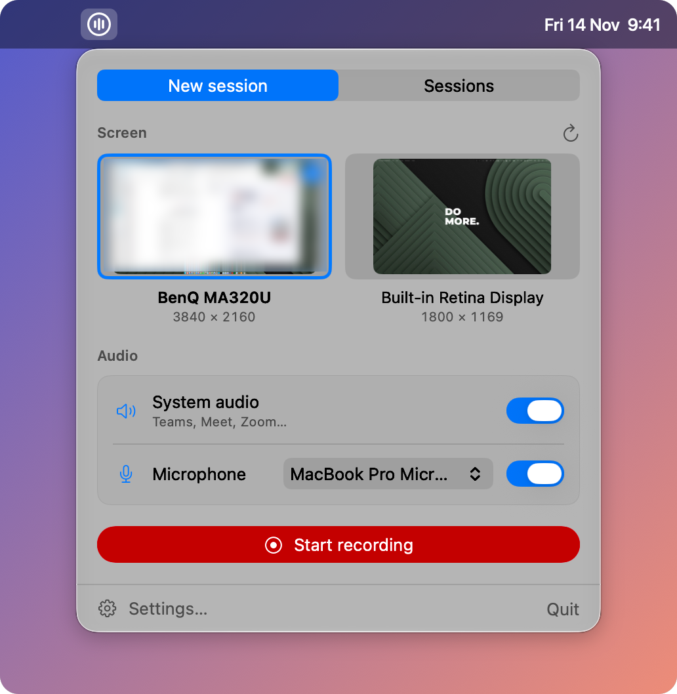
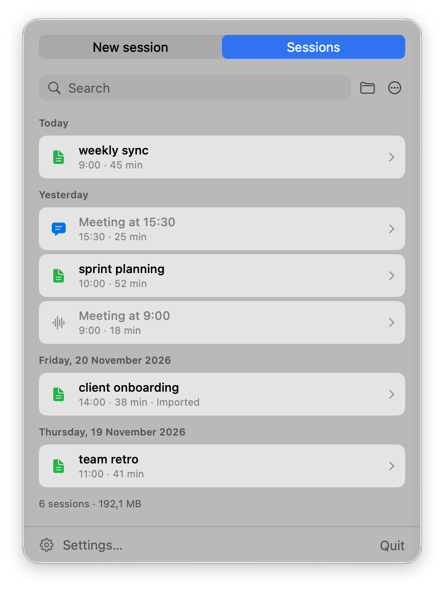
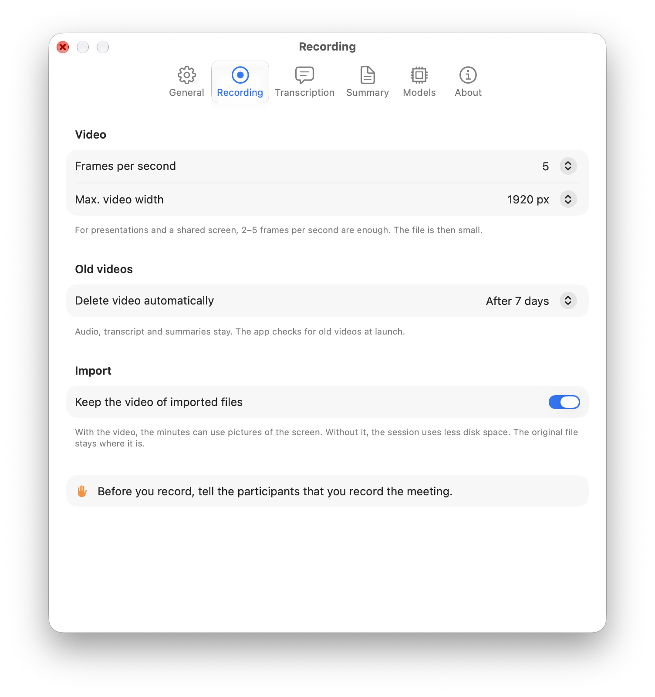
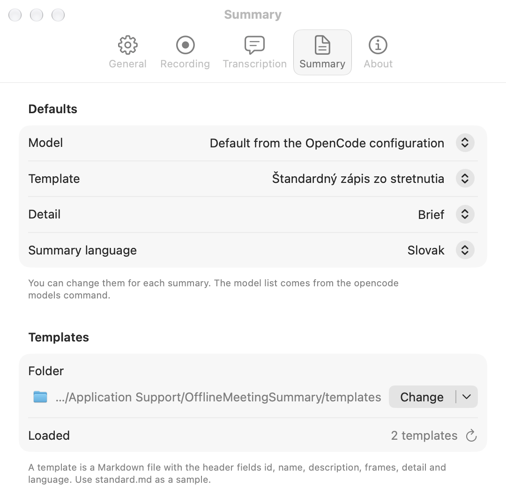
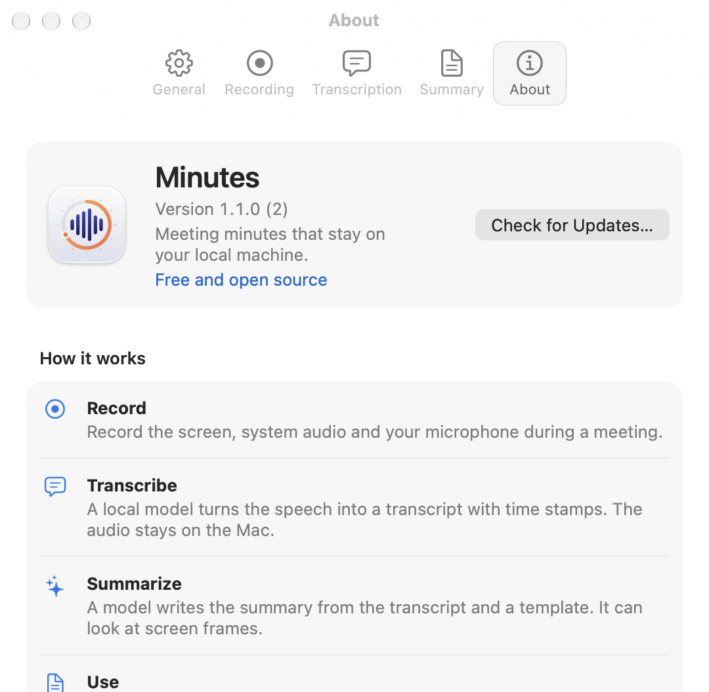

One click in the menu bar.
Click the Minutes icon. Select a screen and the audio sources. Then click Start recording.
- System audio records the other participants from Teams, Meet or Zoom.
- Microphone records you. In the transcript you are “me”, the others are “others”.
- During the recording you see the audio level. You can mute each source.
You can also record only audio or import a recording that you already have. See the questions below.
Before you record, tell the participants that you record the meeting. Use headphones, or the microphone also picks up the speakers.

The transcript is made on your local machine.
When you stop the recording, the transcription starts by itself. A local model transcribes each audio track separately and adds time stamps. It handles Slovak, Czech, English and a mix of them.
While it runs, the ring of the menu bar icon fills. You can use your Mac as usual. The transcript is saved as Markdown, TXT, SRT, VTT and JSON.
Minutes from a template, not from the model's mood.
In the session detail, select a template, a detail level, a model and a language. In Extra, write what to focus on. Click Create summary. The finished summaries are at the top of the detail. New summary… opens the options again.
Templates are Markdown files: standard minutes, your own templates (for example your company's format) or a one-off instruction. When the model needs to see the screen, it cuts a frame from the video at that time.
Each summary is a new file in the session folder. The old one stays. The copy button puts the summary on the clipboard: Mail, Teams and Word paste formatted text. Show prompt opens the full text that the model gets.

Every meeting has its own folder.
The Sessions tab lists your recordings by day. The session name is the topic from the minutes. Search by topic, date or screen.
Free up space deletes video, audio and frames. The transcript and minutes stay. Delete session moves the folder to the Trash.
Did you stop by mistake, or did the Mac restart? Click Continue recording: the new recording becomes the next part of the same session. Two separate sessions join with Merge with previous session. You get one transcript and one set of minutes for the whole meeting.
~/Meetings/2026-11-13_12-31-25/ ├── recording.mov · audio/ · frames/ ├── 2026-11-13_12-31-25_transcript.md └── outputs/2026-11-13_meetingsummary_<topic>.md

What stays on your local machine, and what does not.
and selected frames
The video never leaves your local machine. The audio goes to a transcription server only if you select one in Settings → Transcription. With a local model in OpenCode, nothing leaves your local machine. The app sends no telemetry. The update check only downloads the public list of versions from GitHub.
The icon tells you what is going on.
Look up at the menu bar of this page. Its icon changed while you read.
- ReadyWaits for your next meeting.
- RecordingRed dot and the meeting time.
- TranscribingThe ring fills as the transcript grows.
- Writing minutesThe arc spins while the model writes.
- Minutes readyA dot waits until you open the popover.
- Starting or savingThe arc spins for a moment.
- Update availableA blue dot. Click Update in the menu.
Sensible defaults. You can change everything.
App language (English or Slovak), sessions folder, video quality, transcription model, default template and model for minutes.
The app updates itself. It checks for a new version once a day and installs it with one click, never during a recording or a job. Turn the checks off in General. About links to the source code, the release notes and a problem report.





Five steps to your first minutes.
Download the app
- Download
Minutes-1.3.0.dmgfrom GitHub. Open it and move Minutes to Applications. - Open Minutes. The icon appears in the menu bar.
- Click the icon and then Allow. Allow Minutes in System Settings → Privacy & Security → Screen & System Audio Recording. Restart the app.
- In Settings → Transcription, click Download model. It downloads once.
- Install OpenCode and set up a model: a local one (for example Ollama), your company server or a cloud provider:
brew install opencode ffmpeg
You install the app one time. From version 1.1.0, Minutes updates itself: a blue dot next to the menu bar icon tells you about a new version.
What you need
| Mac | Apple Silicon (M1 or later) |
|---|---|
| System | macOS 15 Sequoia or later |
| Space | about 3 GB plus recordings |
| Network | none for local models; else what your model needs |
| Tools | OpenCode; optionally Claude Code, Codex and ffmpeg |
Signed and notarized by Apple
Or build it yourself.
Minutes is open source. Clone the repository and build the app with Xcode. You need Xcode 26 or later and XcodeGen.
Your build has your own signature. macOS asks for the screen recording permission again.
$ git clone https://github.com/softverse-space/minutes.git $ cd minutes/apps/macos $ brew install xcodegen && xcodegen generate $ xcodebuild -scheme OfflineMeetingSummary \ -configuration Debug -derivedDataPath build/DerivedData build $ open build/DerivedData/Build/Products/Debug/Minutes.app # logic tests $ cd OMSCore && swift test
Frequently asked questions
Does it work without internet?
Recording and local transcription do. Minutes work offline too, with a local model in OpenCode (for example Ollama).
How do I switch the app to Slovak?
Settings → General → App language → Slovenčina. Then click Restart now.
How do I add my own template?
Copy standard.md and change id, the name and the instruction. Save it in the templates folder from Settings → Summary.
The transcript is in the wrong language.
In Settings → Transcription, set the speech language manually and transcribe again.
What is in the menu of the menu bar icon?
Right-click the Minutes icon. You can start or stop a recording, import a recording, stop a transcription or quit the app.
Can I record only audio?
Yes. On the New session tab, turn off the Screen switch. The app records system audio and the microphone without a video. The file is then much smaller. The app still needs the screen recording permission, because macOS gives system audio only with it.
Can I make minutes from a recording of another app?
Yes. Click Import a recording… on the New session tab, or drop the files on the popover. The original files stay where they are. Minutes reads m4a, mp3, wav, mp4, mov and other common formats. For mkv, webm, ogg and opus it needs ffmpeg. The app copies the file and starts the transcription at once. When you import more files, the app asks: one session or separate sessions.
How do I free up disk space?
In the session detail, click Free up. The app can also delete old videos by itself (Settings → Recording).
The app says it has no permission to record the screen.
Allow Minutes in System Settings → Privacy & Security → Screen & System Audio Recording, then restart the app.
How do I update Minutes?
From version 1.1.0, Minutes checks for updates once a day. A blue dot next to the menu bar icon tells you about a new version. Click Update in the menu. You can also click Check for Updates… in Settings → About. The app does not restart during a recording or a job. From version 1.0.0, download the new .dmg one time.
How do I report a problem?
In Settings → About, click Report a problem on GitHub. The report gets the app and macOS versions. Do not attach recordings, transcripts, summaries or screenshots of real meetings.
Minutes 1.3.0
- decision
- Minutes takes the minutes. The data stays on your local machine.
- task
- Install Minutes – you – before your next meeting.
- open
- Which template do you use first?